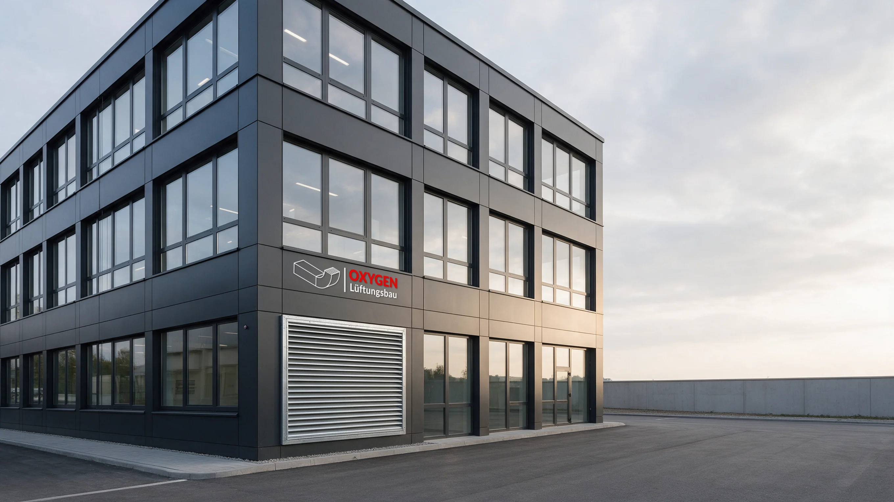
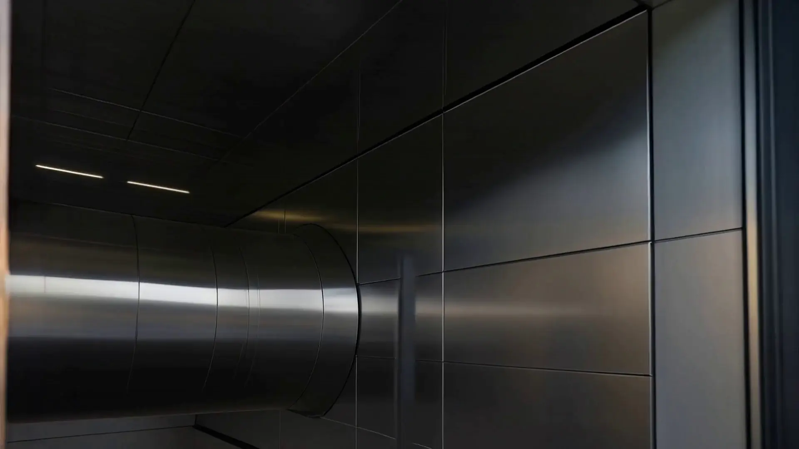
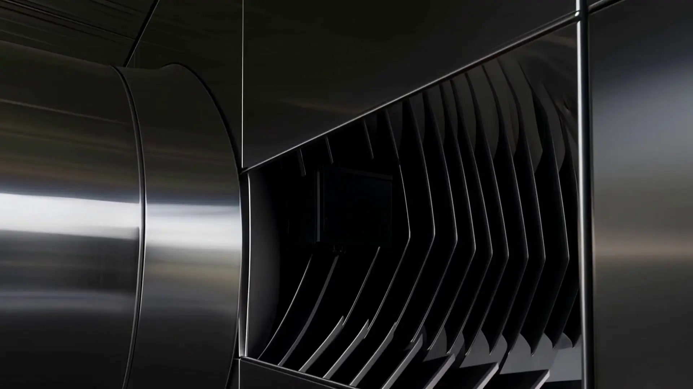
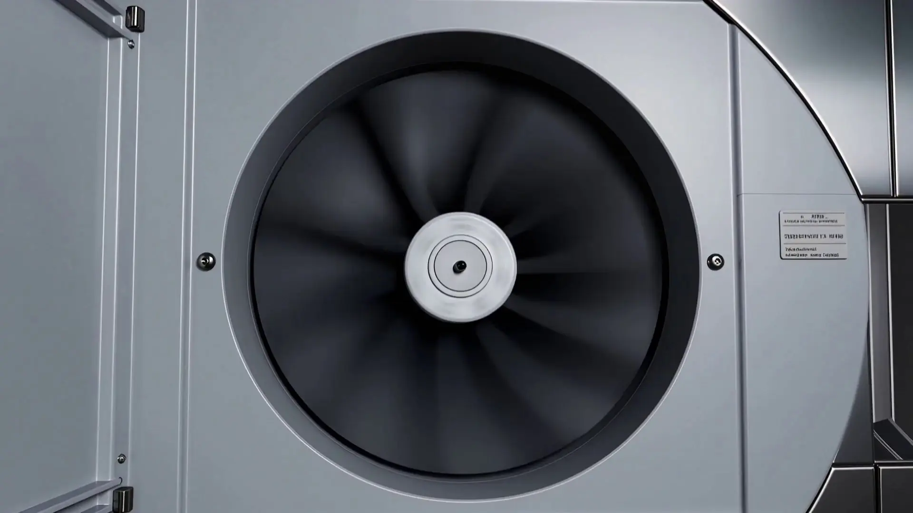
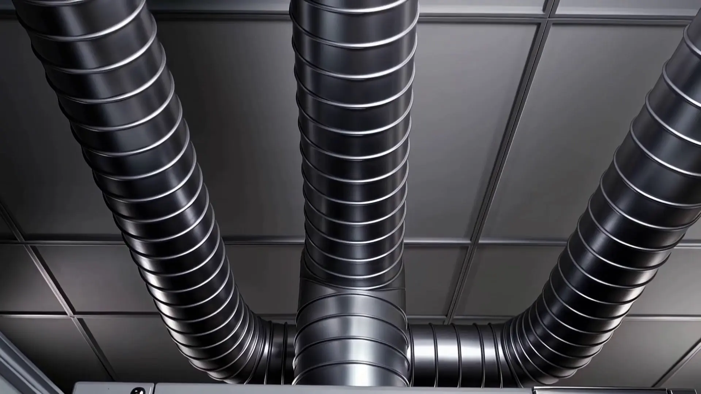
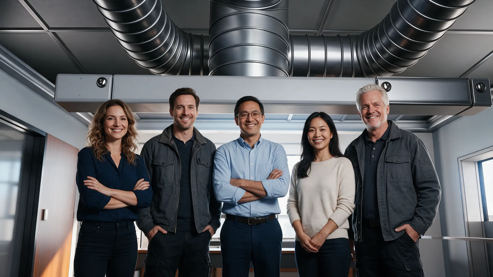

Deutschlandweit tätig
Oxygen
Oxygen
Lüftungsbau
Wir bieten unseren Kunden optimale Ergebnisse.
Zuverlässige Montageteams für Lüftungs- und Klimatechnik, RLT-Anlagen und Anlagenbau – abgestimmt auf Ihre Baustelle und Ihren Zeitplan.
- Referenzen
- 50+
- Jahre Erfahrung
- 8+
- Termintreue
- 100%
Unser Unternehmen
Erfahren. Qualifiziert. Leistungsfähig.
- FlexibelReagiert schnell auf Änderungen auf Ihrer Baustelle.
- ZuverlässigWiederkehrende Monteure, kaum Einarbeitung.
- KompetentErfahrene Bau- & Projektleiter und eingespielte Monteure.
- GewissenhaftSaubere, nachhaltige Ausführung.
Unsere Leistungen
Modular buchbar und sauber abgegrenzt
- Lösungen für alle Probleme
- Hilfe bei stockendem Projekt
- 100 % Fertigungsquote
Unsere Referenzen
Alle Referenzen